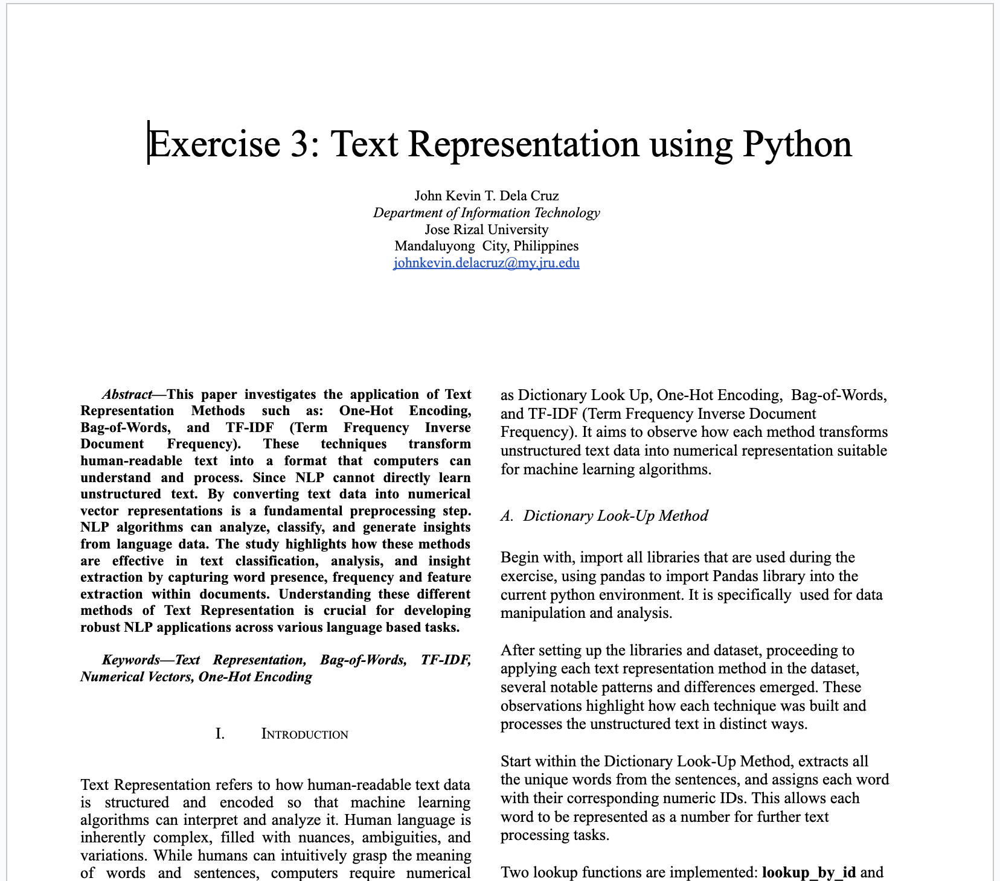
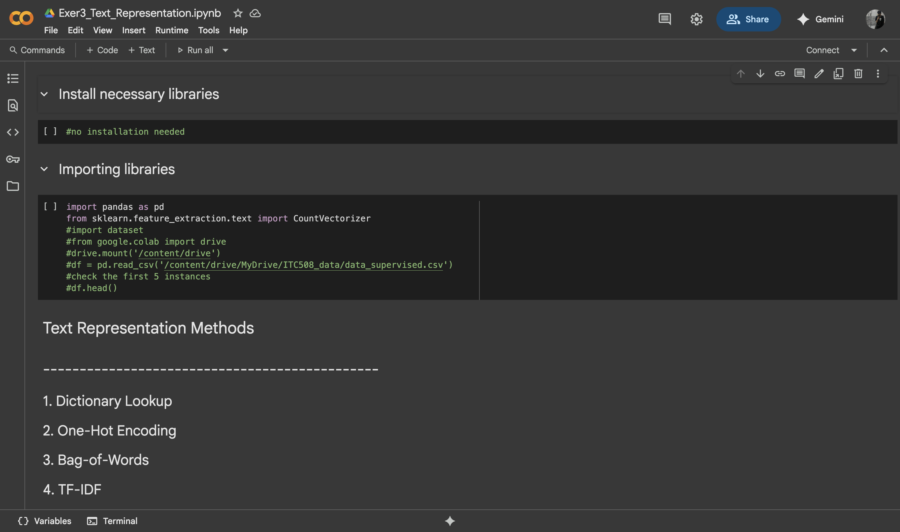

Exercise 3: NLP Text Representation (Week 3)
- In this Exercise, studied topics from Lecture 3 (NLP Text Representation) and Lecture 4 (Practical NLP Application Models).
- From lecture 3, I learned about the basic fundamentals of Text Representation, which it involves transforming text into a numerical representation that algorithms can comprehend while limiting bias. This conversion is necessary because most of the machine learning algorithms require a numerical inputs to understand and process it. I learned common text representation techniques including One-Hot Encoding, Bag-of-Words, and TF-IDF (Term Frequency Inverse Document Frequency).
- In Lecture 4:, I focused on practical NLP applications, which involves the use of NLP techniques and models to solve real-word problems and provide value in various domains. For example, Text Classification that involves categorizing text data into predefined categories or labels. I discovered that this task has a wide range of practical applications across various industries, the common algorithms that used to build text classification are Naive Bayes, Support Vector machines (SVM), Decision Trees, and Deep Learning techniques such as Convolutional Neural Networks (CNNs).
- In completing this laboratory exercise, I followed the notebook provided by Mr. Raga and made modifications to the code to improve the interpretation of numerical representations. I also researched various techniques—including One-Hot Encoding, Bag-of-Words, TF-IDF, and Word Embeddings to better understand their strengths and limitations. Additionally, I watched YouTube tutorials that demonstrated practical implementations of these methods, which allowed me to apply the concepts in simple case scenarios.
- Ultimately, this exercise gave me hands-on experience with the text representation, which helps me clearly understand the importance of text representation in NLP tasks. Converting text into a numerical representation that allows computer to understand it efficiently. I realize skipping this process might have a huge impact on building a model, which leads to poor performance.